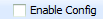
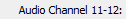
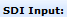

#Setup SDI input front-end #This routine assume the gui has to be under Mux tab already #This script assume that the Java GUI is already running. #inputs: required: boardNum=<1..3> sdiPort=<1..8> portEnable=<0/1> #inputs: optional: videoFormat=[] scte104Extraction =[0/1]afdOption=[] #inputs: optional: audio=[1=PCM, 2=DD, 3=DD+, etc] #Usage: set_sdi.sikuli boardNum=<1..3> sdiPort=<1..8> portEnable=<0/1> #Usage: set_sdi.sikuli boardNum=<1..3> sdiPort=<1..8> portEnable=<0/1> ... #Usage: set_sdi.sikuli boardNum=<1..3> sdiPort=<1..8> portEnable=<1> audio="1=DD, 2=PCM" ############################################################### #common code for every sikuli code. Do not remove this section from me7klib import * import re ############################################################### #YOUR code start here ############################################################### #This is your check for the inputs that you are expecting. def Check_args(): #checking for required arguments Check_arg('boardNum') my_board = Get_arg('boardNum') if int(my_board) < 1 or int(my_board) > 3: Exit_program('Invalid boardNum not in range [1..3]: ' + my_board, 2) Check_arg('sdiPort') my_port = Get_arg('sdiPort') if int(my_port) < 1 or int(my_port) > 8: Exit_program('Invalid sdiPort not in range [1..8]: ' + my_port, 2) Check_args() ############################################################ #Main program definitions code start from this point #Any global variables here my_board = Get_arg('boardNum') my_port = Get_arg('sdiPort') #Any definitions are here def Port_Enable(): '''Enable/disable the sdi port ''' my_portstatus = 0 #Check to see if the sdi port is on/off if exists(Pattern().exact()): #sdi port is disabled Print_debug('sdi port is currently disabled.') if exists(Pattern().exact()): my_portstatus = 1 Print_debug('sdi port is currently enabled.') #Now trying to enable the port if the argument is asking for it if Get_arg('PortEnable'): my_portenable = int(Get_arg('PortEnable')) #Turning off the port. If is is already off, do nothing. Ortherwise, turn it off if my_portenable == 0: if my_portstatus == 0: Print_debug('Nothing to do.') else: find(Pattern().exact()) click(Pattern().exact().targetOffset(-34,0)); sleep(1) #Turning on the port. If is is already turn on, do nothing. Ortherwise, turn it on. elif my_portenable == 1: if my_portstatus == 0: #Need to turn it on find(Pattern().exact()) click(Pattern().exact().targetOffset(-32,0)); sleep(1) else: Print_debug('PortEnable is not used.') def Select_Video_Format(): pass def SCTE104_Extraction(): pass def AFD_AR_Extraction(): pass def OP47_Extraction(): pass def CC_Format(): pass def Configure_Audio(audio_channel, audio_type): ch_list = [0, , , , , , , , ] targetch = ch_list[int(audio_channel)] find(Pattern(targetch).exact()); click(Pattern(targetch).exact().targetOffset(155,0)) if audio_type == 'Disabled': click(Pattern(targetch).exact().targetOffset(100,20)) elif audio_type == 'PCM': click(Pattern(targetch).exact().targetOffset(100,35)) elif audio_type == 'DD' or audio_type == 'Dolby Digital': click(Pattern(targetch).exact().targetOffset(100,50)) elif audio_type == 'DD+' or audio_type == 'Dolby Digital Plus': click(Pattern(targetch).exact().targetOffset(100,75)) else: Exit_program('Invalid audio type not in range [Disabled, PCM, DD, DD+]: ' + audio_type + ' for audio channel ' + audio_channel, 2) def Configure_Audio_Channels(): #checking for 8 audio channels if Get_arg('audio'): myaudio = Get_arg('audio') audiolist = myaudio.split(',') for item in audiolist: audiochannel = item.split('=') if len(audiochannel) == 2: Configure_Audio(audiochannel[0], audiochannel[1]) else: Exit_program('Invalid audio parameter: ' + myaudio, 2) def Verify_Port_Enable(): '''Verify if the sdi porit is enabled/disabled correctly ''' if Get_arg('PortEnable'): #First select the right sdi port RunSikuli('select_sdi_port') my_portenable = int(Get_arg('PortEnable')) if my_portenable == 0: #Check to see if port is actually off if exists(Pattern().exact()): Print_debug('Port turned off successfully.') else: Exit_program('Port failed to turn off.', 1, 1) #Turning on the port. If is is already turn on, do nothing. Ortherwise, turn it on. elif my_portenable == 1: if exists(Pattern().exact()): Print_debug('Port turned on successfully.') else: Print_text('Port failed to turn on.', 1, 1) else: Print_debug('PortEnable is not used.') def Setup_SDI_Port(): '''Configure all possible options for SDI input ''' Settings.OcrTextSearch=True Settings.OcrTextRead=True RunSikuli('select_sdi_port') if exists(): read_port = find().right(40).text() expected_port = my_board + '/' + my_port if re.search(expected_port, read_port): Print_text('Setting up SDI port : ' + read_port) else: Exit_program('Mis-matched port found: ' + read_port + ' while looking for ' + expected_port, 2, 1) else: Exit_program('Cannot find SDI front-end page.', 1, 1) Port_Enable() Select_Video_Format() CC_Format() SCTE104_Extraction() AFD_AR_Extraction() OP47_Extraction() Configure_Audio_Channels() RunSikuli('apply_changes') Verify_Port_Enable() ####################################################### #Main program flow Setup_SDI_Port()